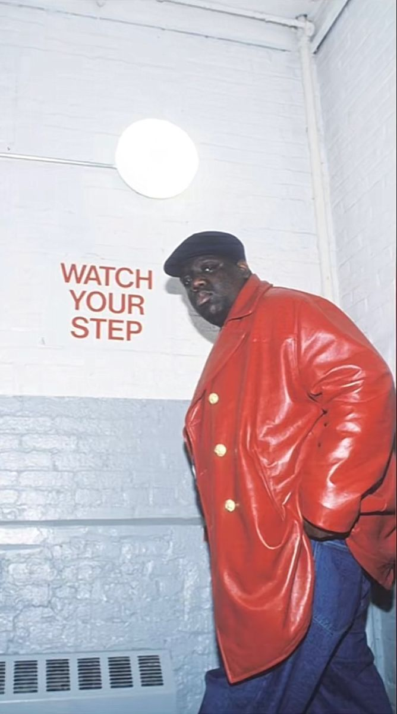

.png)
The 90s was a transitional period for black people around the world, specifically hip hop. Hip hop began to expand in ways we could not imagine from fashion to dance to lyrical styles. Black people were given the opportunity to express themselves in ways they could not before. In the early 90s, producers began using audio editing software and digital effects to create new styles and to sample beats. Also, in the 90s artist created a new style of socially-conscious hip hop when they began rapping about political and social issues. These new ideas began the expansion of music that we see today. 90s music birthed many legends such as Tupac, Biggie and Aaliyah that are credited for “changing the game.†In the 1990s, the “hip-hop/rap†genre exploded to become, by far, the most common genre of music on the Billboard Hot 100 charts for two decades.
.gif)
In the realm of musical epochs, few eras have left an indelible mark quite like the 1990s. The
decade ushered in a tapestry of cultural shifts, and at the heart of this vibrant mosaic was the If someone asked you what music you would prefer to listen to if you had headphones glued to your ears for the rest of your life? What would you say?
enchanting genre of R&B (Rhythm and Blues). The 90s R&B scene wasn't merely a musical
trend; it was a cultural phenomenon that encapsulated the hopes, dreams, and emotions of a
generation
.jpg)
30 years ago, 1990 was a major turning point for R&B. The R&B singles chart in America became known as ‘Hot R&B singles’ in October of that year, after eight years of being called the ‘Hot Black Singles’. The significance and root of this racial label is clear; R&B was considered a genre listened to specifically by black people. R&B’s transcendence beyond racial lines in the present shows that there has been a clear, and much welcomed, shift in the way in which society tries to label everything.

What Is Hip-Hop Music?
Rhythm and blues, commonly known as R&B, is a musical genre developed by Black Americans in the 1940s that’s been continuously refined through the present day. R&B derived from gospel, jazz, folk, and traditional blues music and emerged in tandem with rock ‘n’ roll..
R&B notably diverged from rock music in later decades. Contemporary R&B is often driven by keyboards, synthesizers, strong bass lines, and looped drum beats. In this sense, it has more in common with hip hop than rock music. Contemporary R&B songs regularly top charts, making R&B one of the most commercially successful genres in the modern music industry.

1. Strong overlap with rock music: Many of the best R&B acts of this early era were co-categorized as rock ‘n' roll. These predominantly Black artists in turn inspired many white rock bands, including the Beatles and the Rolling Stones.
2. Guitar-based instrumentation: The electric guitar was the central instrument in early R&B. It was backed by drums, a double bass (later an electric bass guitar), and piano. Melodies were performed by lead vocalists or the occasional saxophone.
3. Inspiration from blues and church music: Many early R&B artists were steeped in blues and gospel traditions. Some R&B albums from this era contain openly Christian themes, while others reworked blues standards for contemporary audiences.è
The 53 Best R&B Songs of the ’90s
.gif)
In the 1990s, R&B underwent a sea change. Though the songwriting was still steeped in traditional romance and courtship the influence of hip-hop brought about edgier production styles, raunchier attitudes, and new commercial peaks.
Hardcore crooning and freaky ballads were everywhere, alongside vocally deft girl groups and harmonized ensembles who
took begging and pleading to another level. At the same time that the genre was extending its reach, its sound was evolving.
too, from Teddy Riley’s danceable percussion and neo-soul’s live instrumentation to Timbaland and Missy Elliott’s gravity-defying experimentation. The following list, presented alphabetically by artist, includes R&B tracks featured on our 250 Best Songs of the 1990s, plus 21 more that are integral to the genre’s commercial and artistic expansion.


“Are You That Somebody?†was the song that consolidated Aaliyah’s image as a refined and unapologetic streetwise princess, supplanting the more traditional R&B sound of her work with R. Kelly in favor of something that nudged toward hip-hop soul. The material Timbaland and Missy Elliott created for the singer didn’t require her to scream or over-embellish, but rather forced you to listen harder: Aaliyah’s vocals grew more compelling the softer and more subtle they became. She could grab attention simply by being unusually calm, the gleaming center of a rhythm track that telegraphed emotional chaos in its fits and starts.
Learning from catastrophic sample lawsuits against De La Soul in 1989 and Biz Markie in 1991, Timbaland became one of the first producers to create signature hip-hop loops out of obscure sound-effect records and found noises. The baby gurgles that punctuate the song’s stuttering tango are first ridden by Tim’s gravelly vocal affirmations, then by Aaliyah’s hushed, reedy croon. The hybridized sound—intentionally odd, jittery tempos, backed by syncopated commentary—was groundbreaking and reflective of something more: the building of a persona around Aaliyah with an even greater mystique than that Jimmy Jam and Terry Lewis had created for Janet Jackson in the years prior. –Carol Cooper

3.Allure: “All Cried Out†[ft. 112] (1997).
“All Cried Out†was initially released in 1985 as a piano-tinged power ballad by freestyle icons Lisa Lisa & Cult Jam, characterized by weepy theatrics and huge AquaNetted bangs. Allure’s revival a little more than a decade later revealed what Lisa Velez’s voice, which was better suited to dance music, didn’t quite illustrate: In the hands of two profoundly raw quartets who could sing their faces off, “All Cried Out†is masterful storytelling, chronicling the pain of a breakup in heart-wrenching,
minute-by-minute detail. Allure were fresh out of Manhattan’s famed LaGuardia performing arts high school, but they had the resonance and harmonies of a more mature group. With Bad Boy heartthrobs 112 playing foil on the second verse, the whole affair is a devastating emotional bonfire, one that meets the moment for your messiest, most melodramatic goodbyes. As they sing in beautiful misery towards the end, “Don’t you know my tears will cause an inferrrnoooo?†–Julianne Escobedo Shepherd
4. Bell Biv DeVoe: “Poison†(1990)
Before “Poison†rocketed them to superstardom, Ricky Bell, Michael Bivins, and Ronnie DeVoe were pretty much only known as “the other guys in New Edition.†That gave them the freedom to try out a risky new sound, a groundbreaking blend of R&B and hip-hop that framed the group’s vocal harmonies in gritty production. At the time, the casual misogyny of the song’s raps were the clearest sign that these guys were
done wooing “Candy Girl”s; thirty years later, it’s hard to find anything smooth about lines like “the low pro ho she’ll be cut like an afro.†But that opening dirty snare roll, now as iconic as “Be My Baby,†still finds a way to fill any wedding or bar mitzvah dance floor, regardless. –Jessica Suarez
5. D’Angelo: “Brown Sugar†(1995).
“Brown Sugar†is effortlessly cool: In the music video, D’Angelo struts into a dimly lit lounge, sits at the piano, and instantly busts out the sweetest serenade, with smoke from a joint still coming out of his mouth. If you told me that’s how he actually recorded the song, I would absolutely believe it.
In an era when much of the popular R&B singles had been inspired by Teddy Riley’s new jack swing slickness, D’Angelo’s debut hit was a slow-burner that felt beamed in from another universe. Inspired by icons like Marvin Gaye, Al Green, and Stevie Wonder, the Virginia-raised singer pulled from those retro roots while addings elements of hip-hop,
helping to lay the foundation for neo-soul. The rap influence is in D’Angelo’s look—cornrows and baggy clothes—but also in the tinny drums programmed by A Tribe Called Quest’s Ali Shaheed Muhammad, which give the song an almost slow-mo bounce. Filtered through the singer’s honey-smooth falsetto and mystic allure, the past and present become seamlessly intertwined. –Alphonse Pierre
6. En Vogue: “Free Your Mind†(1992)
This is a group of rappers from Staten Island who, in some ways, were symbols of a hip-hop revolution. They’ve changed not only the sound but also the business of rap music forever. The clan had the following members – GZAб RZA, Raekwon, U-God, Ghostface Killah, Ol’ Dirty Bastard, Method Man, Inspectah Deck,and later Cappadonna – who had a mutual mission.
As RZA, the group’s founder claims, the mission was: “To open up the minds of the youth and the people and become aware of our people, our situation, our community, martial arts, knowledge of self, and all the things that we put into those songs. Wu-Tang Clan is regarded as a highly influential group in hip hop, helping to popularize and develop the East Coast hip hop and hardcore hip hop styles.»
6.Lauryn Hill: “Ex-Factor†(1998)
TLike any great breakup song, “Ex-Factor†has its own mythology: It was reportedly written about Lauryn Hill’s affair with Wyclef Jean, her former Fugees bandmate. But does that even matter? It’s a plea that will serve as a balm for anyone and everyone as long as hearts are getting broken. Featuring one of Hill’s all-time great vocal performances, the
song’s genesis alone spans generations and genres: The unsettlingly plaintive opening line is adapted from a Wu-Tang Clan sample of a Gladys Knight & the Pips’ cover of Barbra Streisand’s “The Way We Were”; Hill’s track, in turn, has been sampled countless times since. And with its encouraging ad-libs, it almost sounds like a private duet with and to herself, a reminder in the margins that she—just 23 when she wrote it, yet possessing razor-sharp emotional clarity—deserves better. –Emma Carmichael